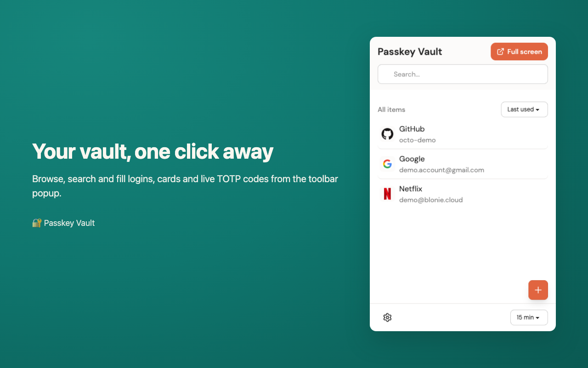
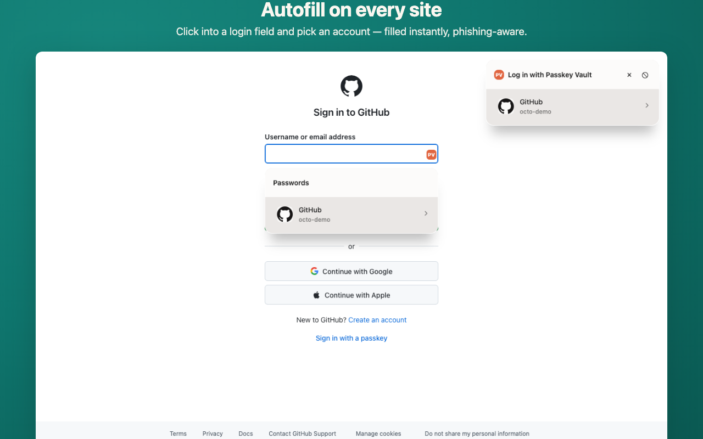
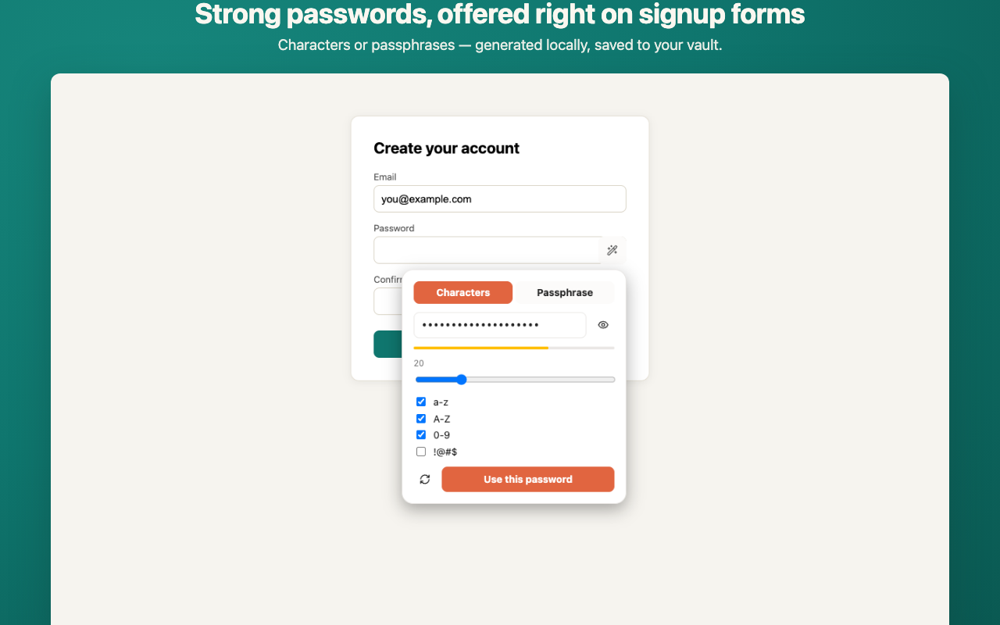
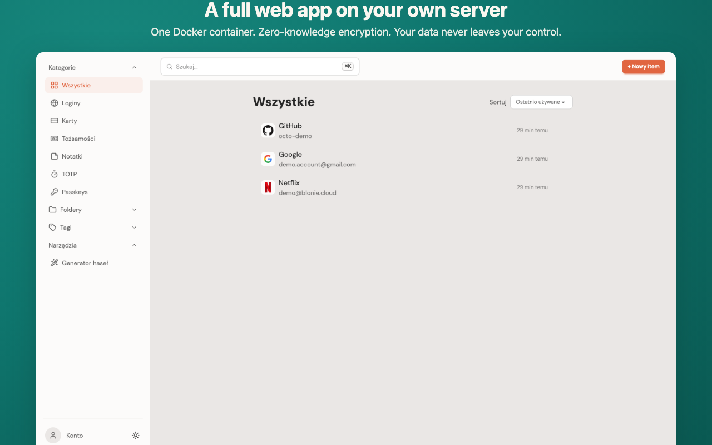
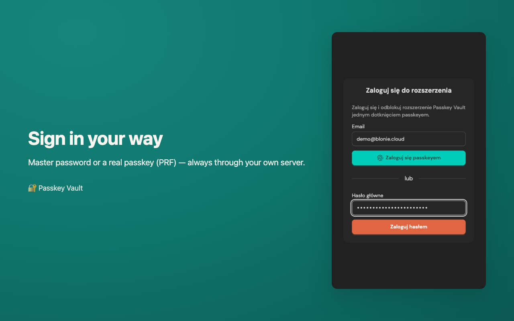

Paczka źródeł dla AMO: scripts/make-amo-source.sh + notatki dla reviewera docs/store/AMO-REVIEWER-NOTES.md
Do zrobienia przez Ciebie przed submisją (3 rzeczy):
1. Logo — ✅ ZROBIONE (logo-master.png → ikony 16–128 w obu buildach, store-icon 128/512, promo tile 440×280).
2. LICENSE — repo nie ma pliku licencji. AMO wymaga wyboru. Decyzja strategiczna: MIT (maksymalna adopcja) vs AGPL-3.0 (chroni przed komercyjnym SaaS-owaniem twojego kodu — tak robi Bitwarden/Vaultwarden). Dla self-hosted menedżera haseł typowy wybór to AGPL.
3. Konta developerskie — CWS: $5 jednorazowo + obowiązkowe 2FA na koncie Google. AMO: darmowe konto Mozilla.
1. Screenshoty do obu store'ów (1280×800)

01 — popup z sejfem (kafelki, wyszukiwarka, TOTP)

02 — in-page autofill dropdown na realnej stronie logowania

03 — generator haseł na formularzu rejestracji

04 — web app na własnym serwerze

05 — sign-in (hasło / passkey przez okno server-ceremony)
Kolejność wgrywania = numeracja (pierwszy screenshot jest najważniejszy — widok sejfu). Regeneracja: cd extension && PV_DEMO_PASSWORD=… npx playwright test store-screenshots, potem node ../docs/store/compose-frames.mjs.
2. Chrome Web Store — formularz krok po kroku
2a. Konto (jednorazowo)
chrome.google.com/webstore/devconsole → opłata $5 (jednorazowa, do 20 rozszerzeń)
Włącz 2FA na koncie Google (wymóg twardy)
E-mail developerski jest nie do zmiany po założeniu — użyj docelowego
Pytanie o „trader" (EU DSA): jako darmowy OSS bez monetyzacji → non-trader (przy traderze twoje imię/adres/telefon są PUBLICZNE na listingu)
2b. Paczka
cd extension && npm run build:chrome
cd .output/chrome-mv3 && zip -r ../../passkey-vault-chrome-0.4.0.zip .
2c. Zakładka Listing
Pole
Wartość
Name (≤75)
Passkey Vault
Summary (≤132)
Self-hosted, zero-knowledge password manager & passkey provider. Autofill, TOTP and passkey login — your server, your keys.
Description
pełny tekst EN w docs/store/LISTING.md (sekcja „Detailed description (EN)")
Passkey Vault is a password manager and passkey provider: it stores the user's credentials in an end-to-end-encrypted vault synced to a server the user configures, autofills logins/TOTP/cards/identities on websites, generates strong passwords, and creates/uses WebAuthn passkeys on third-party sites on the user's behalf.
Uzasadnienia uprawnień (dashboard wylistuje każde z manifestu — wklej z tabeli w LISTING.md, sekcja „Permission justifications"; najważniejsze to content scripts na <all_urls> — tekst podkreśla: key-free scripts, decrypt tylko w tle po geście użytkownika, drugi confirm dla kart/tożsamości).
Remote code: No — WASM jest w paczce, serwer wymienia tylko JSON/szyfrogram.
Data usage: ✅ Authentication information · ✅ PII (e-mail konta, minimalnie) · reszta ❌ · wszystkie 4 certyfikaty Limited Use ✅
Menedżer haseł + szerokie hosty = ręczny in-depth review. Budżetuj 1–2 tygodnie (w 2026 bywały dłuższe kolejki). Nie planuj launchu „na dzień akceptacji". Najczęstsze odrzuty w tej kategorii: nieużywane uprawnienia w manifeście, zbyt ogólne uzasadnienia, brak prominent disclosure. Nasze uzasadnienia są pisane pod reviewera czytającego kod.
3. Firefox AMO — formularz krok po kroku
3a. Konto
Konto Mozilla (accounts.firefox.com) → addons.mozilla.org/developers — za darmo
Ustaw display name w profilu AMO (nie syncuje się samo)
3b. Paczki (dwie!)
# paczka wtyczki:
cd extension && npm run build:firefox
cd .output/firefox-mv2 && zip -r ../../passkey-vault-firefox-0.4.0.zip .
# paczka ŹRÓDEŁ (obowiązkowa — bundler + WASM):
cd ../.. && bash ../scripts/make-amo-source.sh
3c. Flow submisji
Krok
Co wpisać
Upload paczki
zip firefox-mv2; walidacja automatyczna (lint mamy: 0 błędów)
„Minified/machine-generated code?"
YES → wgraj archiwum z make-amo-source.sh
Name / Summary (≤250)
Passkey Vault / tekst AMO-summary z LISTING.md
Description
tekst EN z LISTING.md (markdown wspierany)
Categories
Privacy & Security (desktop; Android drugi wybór jeśli dotyczy)
License
wybór z listy — patrz decyzja LICENSE w §0
Privacy policy
link do PRIVACY.md na GitHubie (AMO nie wymaga już hostowania u nich)
Kluczowe dla AMO: reviewer przebuduje paczkę z twoich źródeł i porówna bajt-w-bajt. Archiwum zawiera lockfiles + rust-toolchain.toml (1.97.0) + dokładną sekwencję komend. Obfuskacja = ban; minifikacja Vite = OK. Id passkey-vault@extension.local jest poprawny (liczy się unikalność).
3d. data_collection_permissions
Zadeklarowane w manifeście: required: ["authenticationInfo"] — uczciwie: sync przesyła zaszyfrowane klienckie blob-y poświadczeń na TWÓJ skonfigurowany serwer. Natywny consent-UI pokazuje się na FF 140+; użytkownicy 115–139 widzą disclosure na listingu (nasz floor 115 zostaje — decyzja: nie odcinamy ESR).
4. Publikacja krok-po-kroku (kolejność)
✅ Logo gotowe — ikony w paczkach, promo tile docs/store/promo-tile-440x280.png, store icon store-icon-128.png
Dodaj LICENSE do repo (decyzja MIT/AGPL) + push
Bump wersji jeśli chcesz startować z 1.0.0 zamiast 0.4.0 (opinia: 0.4.0 jest OK i uczciwe)
CWS: konto ($5, 2FA) → nowa pozycja → zip chrome → Listing (§2c) → Privacy (§2d) → Submit
AMO: konto → Submit New Add-on → zip firefox + źródła (§3b) → formularz (§3c) → Submit
Po akceptacji Chrome: sklep nadaje NOWY extension id — daj mi znać, sprawdzimy czy nic nie pinuje starego id (klucz w wxt.config jest tylko dev-owy, produkcyjnie CWS nadpisuje)
Ogłoszenie: README repo + link do sklepów; default server w onboardingu wtyczki może promować vault.blonie.cloud
5. Prompt na logo (ChatGPT free)
A minimal flat vector app icon for a password manager called "Passkey Vault".
Design: a rounded-square app icon containing a single friendly symbol — a
simplified keyhole merged with a fingerprint swirl (the fingerprint lines form
the round top of the keyhole). Warm indie aesthetic: creamy off-white
background (#FAF7F0), the symbol in deep teal (#0F766E) with one coral accent
(#F97316) as a small dot or single fingerprint line. Soft 24% corner radius,
very subtle inner shadow, NO text, NO letters, NO gradients heavier than 5%,
no metallic effects. Centered composition with generous padding (symbol takes
~60% of the canvas). Clean thick strokes that stay readable at 16x16 pixels.
Flat design, high contrast, sticker-like simplicity, dribbble-style app icon.
Square 1:1, 1024x1024.
Warianty i wskazówki: docs/store/LOGO-PROMPT.md (m.in. wersja z tarczą i glifem passkey, wersja ciemna, test czytelności przy 16 px).
6. Konto demo do screenshotów / review
Serwer
https://vault.blonie.cloud
E-mail
demo@blonie.cloud
Hasło
Vault-Demo-2026!xK9mQ4p
Zawartość
3 loginy demo (GitHub / Google / Netflix) — dane fikcyjne
Pełne materiały: docs/store/LISTING.md · AMO-REVIEWER-NOTES.md · LOGO-PROMPT.md · PRIVACY.md · badania wymagań w tym dokumencie oparte o oficjalne docs (developer.chrome.com / extensionworkshop.com, lipiec 2026).